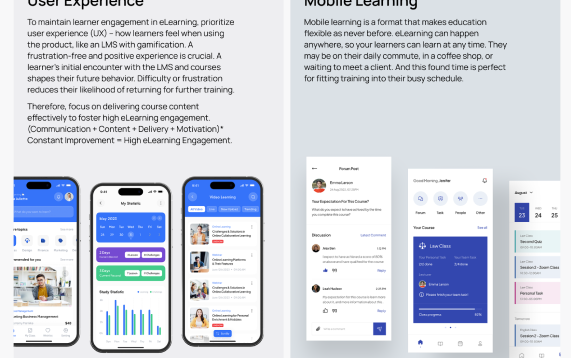

How to Boost Engagement on Online Learning
Platform
UPDATED ON:
23 Oct 2023
During the COVID-19 pandemic, online learning has become commonplace and, quite often, the only possible way to improve the expertise of company’s employees. However, this learning format has a number of disadvantages, the main one of which is lower rates of student engagement (about 72 percent note a decrease in this indicator compared to offline learning). In this regard, enterprises implementing solutions for EdTech market have to resort to specific methods to destroy this trend. Below, we will share our insights about increasing engagement in online learning.
What Is Learner Engagement?
So, what is learner engagement?
In a nutshell, it is determined, first of all, by the quality and
quantity of knowledge acquired over a certain training course.
Secondarily, it refers to the level of interaction between students,
as well as between students and teachers (if their participation is
implied in the specific training course).
To reach high levels of engagement, there are a number of EdTech
development solutions aimed at keeping students'attention and focusing
on tasks, as well as maintaining their mutual assistance at a high
level. In the followingparagraphs, we will talk about what these
solutions are and what aspects of engagement they affect.
Committing to Engagement
Ensuring online learning engagement and commitment is a culture that focuses on creating inherently engaging learning models that rely on two-way communication, superior user experience and design, motivation of students to progress through the course, and opportunities for socialization. Taken together, these aspects help to achieve learning results that are no worse than those that could be obtained by practicing alternative, offline approaches with the best teachers.
Another challenge accompanying the introduction of online learning is the seemingly great need to track intermediate indicators of student performance. However, in practice, this does not work in favor of companies that use this method. Instead of continuous monitoring, it is much better to be guided by the formation of precise, achievable goals for students and indicating the benefits from them. Local incentives for this can be virtual achievements, such as points, moving to a new level, and other elements that we are used to facing in video games.
ELast but not least, constant interaction with students and adaptation to their individual needs is important. This is the only way they can truly experience the benefits of online learning that their offline alternative lacks.
Communication
Effectively involving students in the online learning process begins with using their usual communication channels. That’s why you should start by considering digital tools your company already uses for this – perhaps it’s email or instant messengers like Slack or Telegram. The best solution would be to integrate your online learning platform with these products so that the entry barrier for employees is not too high.
Another benefit of using traditional communication channels is that you can use them to “promote” your course. We're not talking about traditional marketing here, although you'll probably find some of its methods useful. In general, your global task is to convey the value of this training in order to initially create high motivation among employees.

In this regard, you have to clearly outline the benefits they will receive upon successful completion of the course. In the context of a specific organization, this may be career growth opportunities, development in the horizontal labor hierarchy of the company (this will be relevant for highly specialized personnel who want to completely change their area of competence), as well as a presentation of cases of employees who have undergone training and subsequently achieved outstanding results in their area of expertise.
Course Design
By course design, we mean, first of all, its structure. In particular, this structure should be divided into topics that could be covered in short time periods (up to several weeks). Without such a partition, you risk making your course very difficult to master. At the same time, the completion of each new topic is usually accompanied by testing, although it is not mandatory.
It is also important to understand for which topics it makes sense to develop webinars, and which of them should be presented in other formats – for example, in the form of guides, sets of rules, role-played training models, AI-driven simulators (it’s one of the greatest EdTech trends), group lessons, etc. At the same time, it is important to consider the initial level of your employees in order to ensure that the format you chose to cover a specific topic was the most accessible to them. In some cases, it is permissible to invite students to independently choose the most convenient format for presenting educational materials, but such flexibility is resource-intensive from the point of view of implementation.
Overall, your course should combine all three components of effective learning: learning tasks, resources and supports, and their interactions with each other. However, what methods you choose to implement these components will depend both on the level of your students and on your business area as a whole.
User Experience
We have already mentioned above the importance of user experience in the online learning process. In particular, you will have to pay special attention to the user experience, namely, in its intuitiveness. In general, your main motivation should be to eliminate additional barriers to learning associated with the complexity of the software solution within which it will take place.

Gamification plays a significant role in ensuring this intuitiveness –
it lies in the implementation of game principles and mechanics, for
example, task systems, rewards, and symbols of progress, such as
points and achievements.
Also, an important place in this is occupied by the mobility of
learning – that is, the availability of your
LMS with gamification and its
functionality through mobile devices. This will allow your students to
not be tied to a place and time to go through the next topic or pass
the exam. The key to receiving this accessibility is to develop a
responsive design that will ensure that your platform is compatible
with any user device.
Motivation
Ensuring that students are motivated throughout the course is an ongoing process that should involve more than just providing elements to “spark” their interest to move forward (for example, through the aforementioned gamification, creative design approaches, and highlighting the benefits accrued upon successful completion of the course).
The fact is that the greatest demotivator for students is still their personal failure, which can be provoked by external factors – poor health, fatigue, family problems, etc. In this case, you will have to go beyond standard communication with your students by providing them with a free feedback form, where you can find out their individual reasons for poor performance and, perhaps, offer options for overcoming them outside the platform (if possible).
WE RECOMMEND READING
Navigating the Digital Frontier: How Our IT Company Empowers Businesses for the Future
By Sourabh • 23 Dec 2023
Motivation
Although eLearning has forced many organizations to transform their time-tested approaches to employee training, socialization remains fundamental to the success of this process. Indeed, the isolation of your students—both from each other and from their teachers—can be a significant barrier to their engagement training.
The following measures can be taken to resolve this problem:
- apply frequently used communication channels to notify your employees about test results or new topics uploaded to the platform;
- organize group classes from time to time, implementing a mixed learning model;
- use gamification techniques that involve collective participation;
- integrate a forum for extracurricular discussion of tasks and topics presented on your online platform;
- regularly collect and process feedback on the degree of your students’ satisfaction with the learning process.
Using Data and Analytics to Improve Engagement
In this section, we delve deeper into using data and analytics to enhance engagement in online learning, continuing the theme initiated in our partners' article at Corpsoft.io. Our analysis complements and expands upon their research presented in 'Enhancing EdTech Solutions with Innovative Web Development.' We highly recommend reading this valuable material on their site to gain a deeper understanding of how innovative web development can transform educational technology.
To implement online training for your employees as quickly as possible, you can use customized learning management systems or LMSes (solutions for knowledge delivery, its assessment, and student management) as a base of your online learning platform. The main types of LMSes are considered below.
Cloud Learning Management Systems
A cloud LMS is a solution that embodies all the benefits of the cloud: comprehensive accessibility (via browser), scalable storage, and customizable access rights. Users can interact with such systems from anywhere in the world where there is an Internet connection. In general, such systems are a great choice for EdTech professionals due to the fact that they provide simple interaction between companies and e-learning software developers. As for excellent examples of such systems, we can highlight Blocksi, which allows teachers to set up and manage courses quickly and easily.
Open-Source Learning Management Systems
Open source LMSs are free and can be customized to suit the needs of the specific organizations that want to adopt them. Such LMSes are perfect for creating online learning platforms that require unique educational approaches. A successful example of open source systems is Moodle, which has useful features, such as creating course plugins or scalability up to millions of users.
Corporate Learning Management Systems
Such systems are used to train and improve the skills of employees within companies where it is necessary to monitor employees’ productivity, check their compliance with requirements, and develop their skills. The big advantage of such systems is their easy integration with existing software solutions within a single IT infrastructure. A particular example of such systems is the LMS from the Corpsoft.io team, which developed a corporate solution for the MIDFIX company.
Conclusion
If you want to maximize the results of your online learner engagement strategy within your company, you will need to pay special attention to the design of the user interface, the structure of your course, communication between students and teachers, and their motivation. Since all of these aspects are resource-intensive to implement, developing such a solution from scratch can take up a lot of your time. On the other hand, you can simplify this process by using customizable LMS systems.
If you are looking for someone to take on your online learning engagement platform development, feel free to contact us. We have extensive experience in implementing such solutions and are confident that we can give the best to your company as well. Write or call us right now to discuss your idea in detail.
WE RECOMMEND READING
Interested in a custom solution?
Of course, this will require some financial investment from you at the beginning of the path to automation, but over time, this approach usually fully pays off. I can talk about it in detail.
Industries Type:
EDUCATION
Services:
Services: